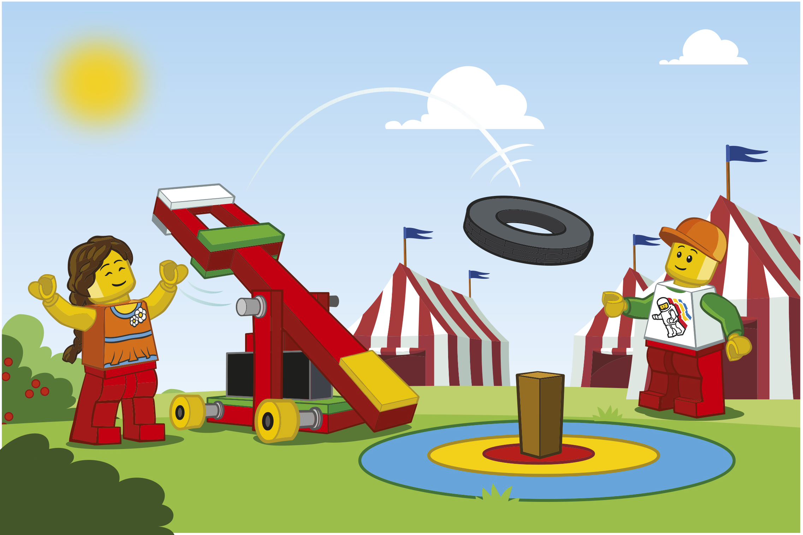
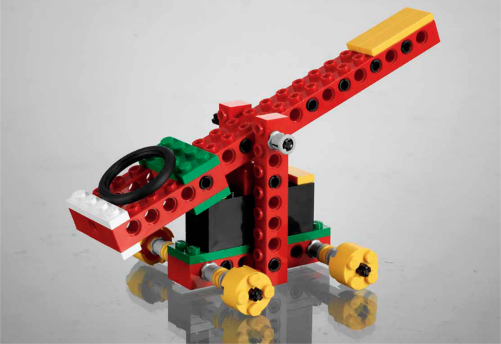
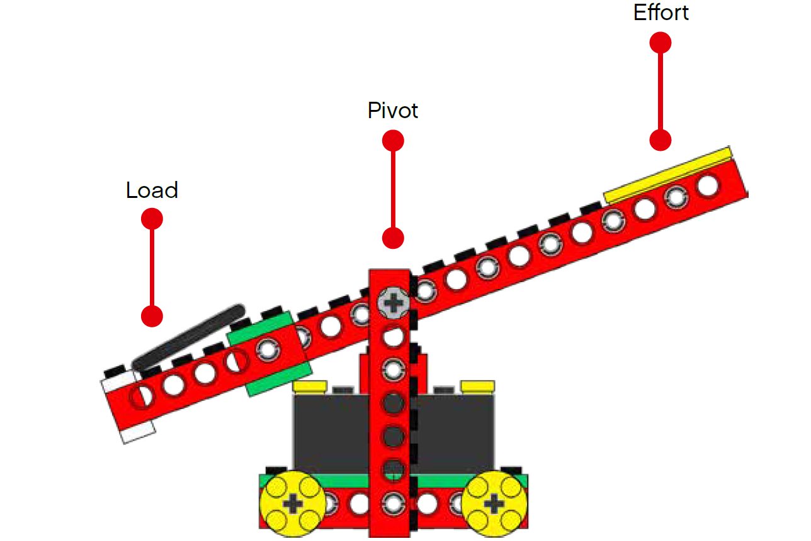
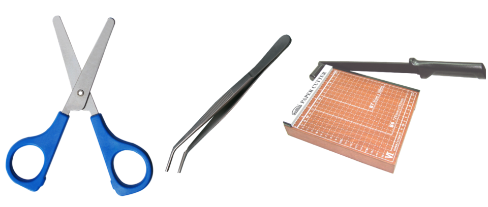
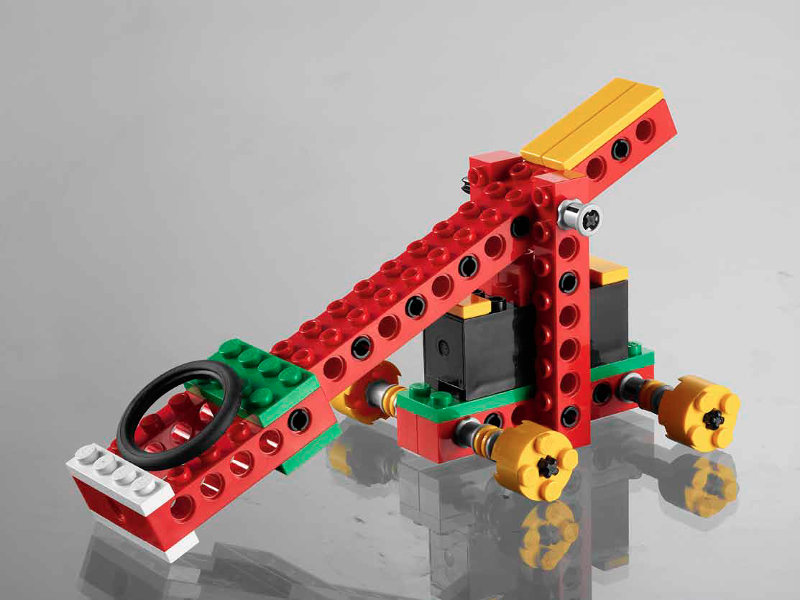

弹射器
（Catapult）
schedule40-90 分钟
stars中级（Intermed.）
face3-5 年级
一. 场景（Connect）

山姆（Sam）和莎莉（Sally）在集市上发现了一个好玩的游戏，叫弹射游戏。玩家通过弹射器把轮胎弹到目的地，得分最多的玩家可以获得奖品。山姆和莎莉也想构建自己的弹射器。
二. 构建（Building）
安全警告：禁止朝人弹射。
三. 思考（Contemplate）
3.1. 弹射器利用了什么原理？
3.1. 弹射器利用了什么原理？
- 【弹射器利用了什么原理？】杠杆原理。由古希腊科学家阿基米德提出，阿基米德说：“给我一个支点，我就能撬起整个地球！”
- 【什么是杠杆（Lever）？】在力的作用下，可绕一固定点转动的硬棒称为杠杆。
- 【什么是支点（Pivot）？】杠杆绕着转动的固定点称为支点。
- 【什么是作用力（Effort）？】使杠杆转动的力称为作用力，也称为动力点。
- 【什么是负载（Load）？】阻碍杠杆转动的力称为负载，也称为阻力点。
3.2. 弹射器属于哪种类型杠杆（Lever）？
3.2. 弹射器属于哪种类型杠杆（Lever）？
- 依据支点、动力点、阻力点所处位置不同，可将杠杆分为 3 种类型：
(1)支点在中间，动力点和阻力点在两侧，如剪刀。
(2)动力点在中间，支点和阻力点在两侧，如钓鱼竿、镊子、筷子。
(3)阻力点在中间，支点和动力点在两侧，如切纸刀、独轮车。 - 弹射器属于第一类杠杆，支点在中间，动力点和阻力点在两侧。
3.3. 调整支点位置
3.2. 调整支点位置？
- 【调整支点位置】使支点和负载端之间的距离变长。
- 【讨论】支点和负载端之间的距离不同，会发生什么不同的效果。
- 【预测】支点和负载端之间的距离变长后，弹射轮胎的距离是变短还是变长？
- 【验证】尝试多次，确保实验的正确性，记录下每次的弹射距离。可同时测试两个模型，形成对比。
- 【结论】支点和负载端之间的距离变长后，弹射轮胎的距离会变长。
四. 分享（Share）

- 与弹射器合张影吧！
- 把对弹射器的想法写下来！
- 同学们，分享你的创造成果吧！